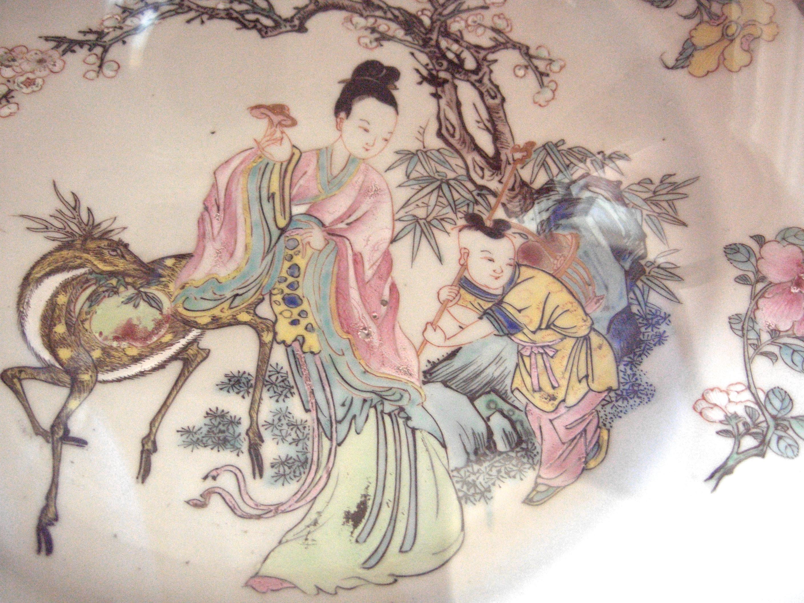

Regina Mamei din Vest
| Xi Wang Mu | |
|---|---|
|
 |
|
| Nume chinez | 西王母 (Xī Wáng Mǔ) |
| Titlu | Regina Mamă a Vestului |
| Domeniu | Nemurire, Occident |
| Simbol | Piersicile nemorții |
| Locul reședinței | Muntele Kunlun |
| Atribute | Înțelepciune, longevitate |
Xi Wang Mu, cunoscuta în limba engleză ca „Queen Mother of the West", este una dintre cele mai venerabile zeiţe din mitologia chineză. Este stăpâna regiunilor occidentale și păzitoare a secretelor nemuritorului.
Conform tradițiilor antice, Xi Wang Mu locuiește în misteriosul Muntele Kunlun, situat dincolo de orizontul cunoscută. În grădina ei extraordinară cresc legendarii "Pomi ai Nemorții", iar fructele lor - piersicile sacre - acordă nemurire oricui le consumă. Se spune că aceste piersici cresc o dată la trei mii de ani, iar doar cei demni pot primi aceste fructe miracoloase.
Xi Wang Mu nu este doar o zeiță pasivă; ea este o forță activă în cosmosul chinez. Ea este cunoscută ca fiind protectoare a Taoismului și ca fiind o învățătoare spirituală a unor oameni demni. Numeroase legende spun cum că doamna a primit vizite de la împărați și sfinți care căutau să obțină de la ea îndrumarea spirituală și secretele vieții eterne.
Într-una dintre cele mai cunoscute legende, Archer Yi a primit elixirul nemuritorului direct de la Xi Wang Mu. După moartea lui Yi, soția sa Chang'e a furat elixirul și a fugit pe lună. Unii susțin că aceasta a fost indirect dorința lui Xi Wang Mu, deoarece Chang'e era vrednica de imortalizare.
Xi Wang Mu a fost venerată timp de milenii în China, iar cultul ei s-a extins în toată Asia de Est. De-a lungul timpului, s-a contopit cu alte zeițe și divinități feminine, devenind o figură complexă care reprezintă sacrificiul, longevitatea și înțelepciunea. Ea este adesea înfățișată alături de alte zeițe și divinități în arta tradițională, purtând haine regale și o coroană de aur.
Site făcut de
Ursulescu Florin-Alexandru, cl. XII-a A, Liceul Atanasie Marienescu